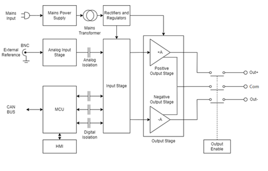
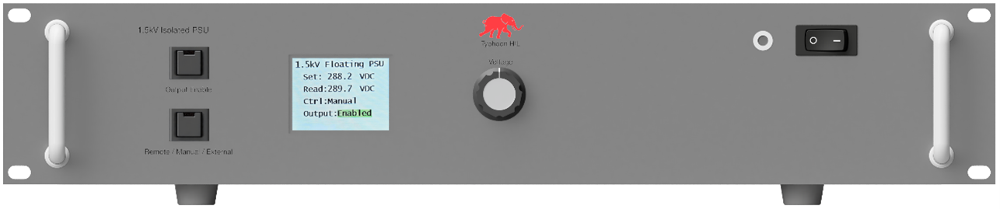
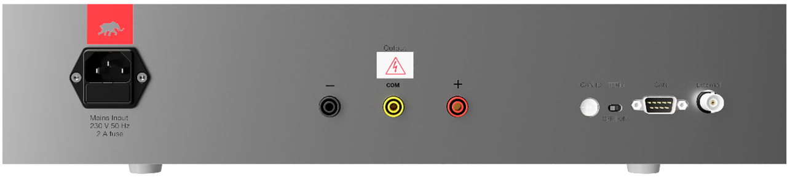
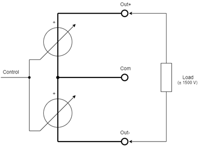
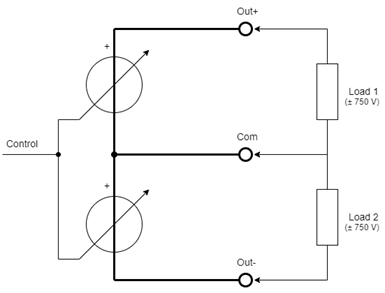

Operator's Guide
Detailed operation guide of the 1.5 kV Power Supply Unit device.
Theory of Operation

This device utilizes linear technology and incorporates two linear amplifiers configured in a bridge topology. It features two isolated mains transformers, each with primary and secondary windings physically separated using dual chamber transformer bobbin to ensure reinforced insulation and low primary to secondary capacitance. Additionally, the digital and analog control circuits are also electrically isolated using high-voltage signal isolation barriers.
Operation Modes
The device supports three distinct modes of operation, selectable via a front-panel push-button:
- Remote Mode: In this mode, both the output voltage setpoint and output enable/disable functions are controlled via the CAN interface. Real-time measurement of the output voltage is also accessible through the same CAN communication protocol. Additional details are described in Remote Mode operation.
- Manual Mode: The output voltage setpoint is adjusted locally using a multiturn potentiometer located on the front panel. Output enable/disable is controlled via a dedicated push-button, also located on the front panel. Output status and actual output voltage are displayed on the integrated front-panel LCD.
- External Mode: The output voltage is regulated by an external ±10 V analog control signal, supplied through a BNC connector on the rear panel. In this configuration, the power supply unit functions as a DC-coupled, four-quadrant amplifier. Output enable/disable is controlled in the same way as Manual Mode.
Upon power-up, the device defaults to Remote mode with the output disabled and the output voltage set to 0 V. In Remote Mode, all communication and control are conducted over the CAN interface, accessible via a D-sub9 connector located on the rear panel. Additional CAN interface features include a rotary CAN ID selector switch (range: 0x0 to 0xF) for assigning the device's node ID, and a CAN bus termination switch to enable or disable 120 Ω termination if required.
Figure 2 shows the front panel layout, while Figure 3 shows the rear panel interface details.


To switch to manual mode, press the Mode Selection push-button. The selected mode will be indicated on the LCD display. To change the mode to External, press the Mode Selection push-button again.
Output Enabling
Output enabling can be performed either by pressing the Output Enable push-button located on the front panel or by sending a corresponding CAN message when operating in remote mode. By default, the output is disabled. Once a valid CAN command is received or the push-button is activated, the output is enabled, and the configured output voltage becomes available at the output terminals.
The output of the device is provided via banana plug terminals located on the rear panel. The output is galvanically isolated from the device chassis (protective earth), with an isolation voltage exceeding ±1500 V.
| Terminal | Signal | Comment |
|---|---|---|
| - | ∓ 750 V | between ‘-‘ and ‘com’ terminals |
| com | 0 V | Midpoint between positive and negative outputs – can be used if split power is necessary to get 0…±750 V outputs |
| + | ±750 V | between ‘+‘ and ‘com’ terminals |


Remote Mode operation
To operate the device in remote mode, connect it to a Typhoon HIL simulator via the CAN communication interface using the supplied D-sub cable. Ensure that bus termination is enabled.
The device’s CAN message ID must be configured using the rotary switch on the rear panel. This same message ID must also be set in the CAN Send component within the HIL model to establish proper communication.
The CAN bus message standard is used in 11-bit ID mode and the CAN bus ID can be from 0x01 to 0x0F (see the rotary switch position on the back panel of the device).
| Byte | Data |
|---|---|
| 1 | “0x56” ASCII code “V” |
| 2 | High Byte for the Voltage set |
| 3 | Low Byte for the Voltage set |
| 4 | Not currently implemented, see note below. |
| 5 | Not currently implemented, see note below. |
| 6 | Not currently implemented, see note below. |
The output voltage setpoint should have 16 bits, split into two bytes, Upper and Lower. The output range is ±1500 V, which means that the LSB is around 46 mV.
Output voltage reading is also in 16 bits, consisting of two bytes. The output voltage can be calculated with the following formula:
The following tables describe the CAN BUS message format for performing normal control operations in Remote Mode.
| Arbitration field | Data Field | |||||
|---|---|---|---|---|---|---|
| Byte 1 | Byte 2 | Byte 3 | Byte 4 | Byte 5 | Byte 6 | |
11-bit Identifier 0x00 – 0x0F |
0x56 | Voltage Upper Byte | Voltage Lower Byte | 0xFF | 0xFF | 0xFF |
| Arbitration field | Data Field | |||||
|---|---|---|---|---|---|---|
| Byte 1 | Byte 2 | Byte 3 | Byte 4 | Byte 5 | Byte 6 | |
11-bit Identifier 0x00 – 0x0F |
0xFF | 0xFF | 0xFF | 0xFF | 0xFF | 0xFF |
| Arbitration field | Data Field | |||||
|---|---|---|---|---|---|---|
| Byte 1 | Byte 2 | Byte 3 | Byte 4 | Byte 5 | Byte 6 | |
11-bit Identifier 0x00 – 0x0F |
0xFE | 0xFE | 0xFE | 0xFE | 0xFE | 0xFE |
| Arbitration field | Data Field | |||||
|---|---|---|---|---|---|---|
| Byte 1 | Byte 2 | Byte 3 | Byte 4 | Byte 5 | Byte 6 | |
11-bit Identifier 0x00 – 0x0F |
0x01 | 0x01 | 0x01 | 0x01 | 0x01 | 0x01 |
| Arbitration field | Data Field | |||||
|---|---|---|---|---|---|---|
| Byte 1 | Byte 2 | Byte 3 | Byte 4 | Byte 5 | Byte 6 | |
11-bit Identifier 0x00 – 0x0F |
0x56 | Voltage Upper Byte | Voltage Lower Byte | Ignore this Byte | Ignore this Byte | Ignore this Byte |
| DAC Setting | Output Voltage |
|---|---|
| 65535 dec | +1500 V |
| 32768 dec | 0 V |
| 0 dec | -1500 V |